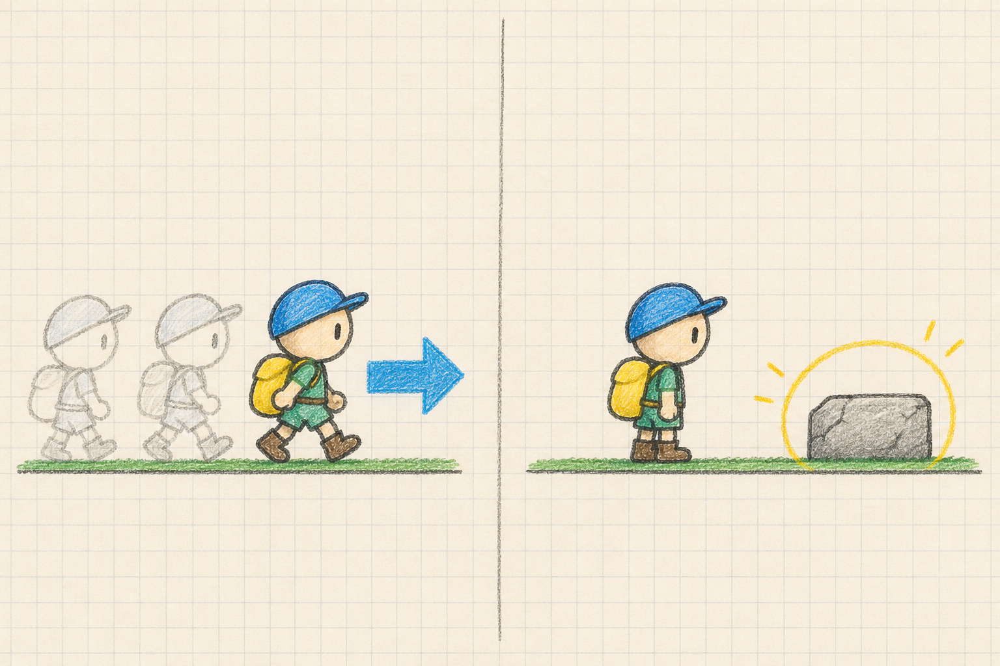
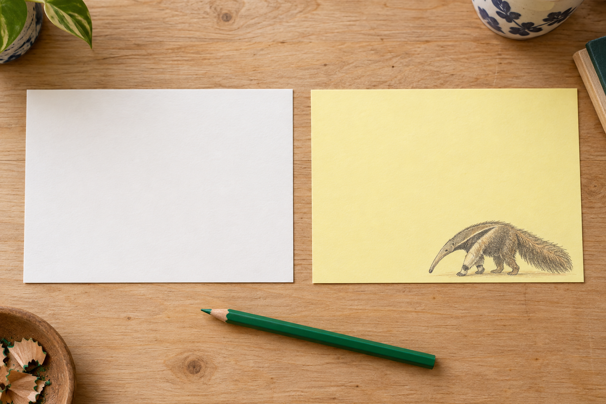
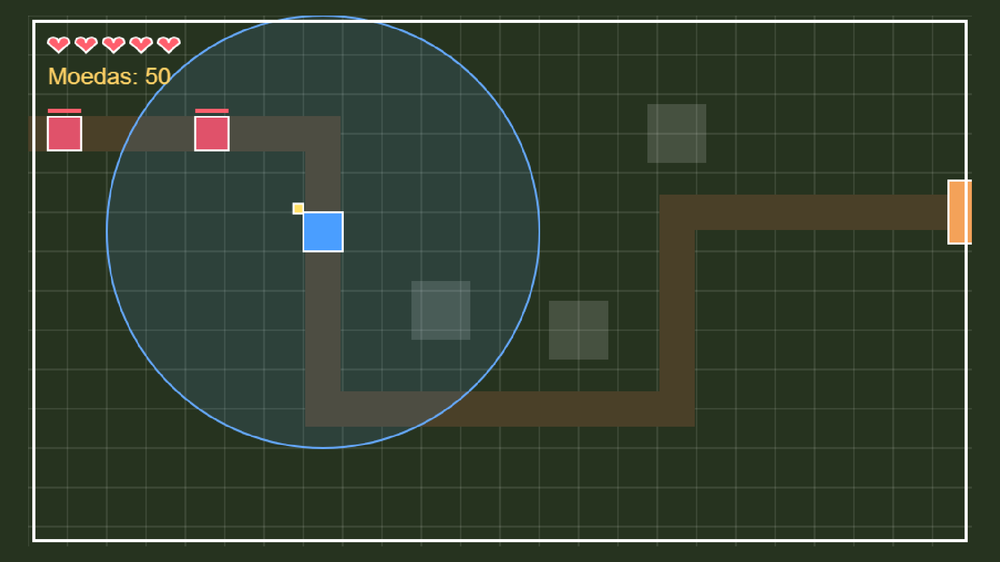
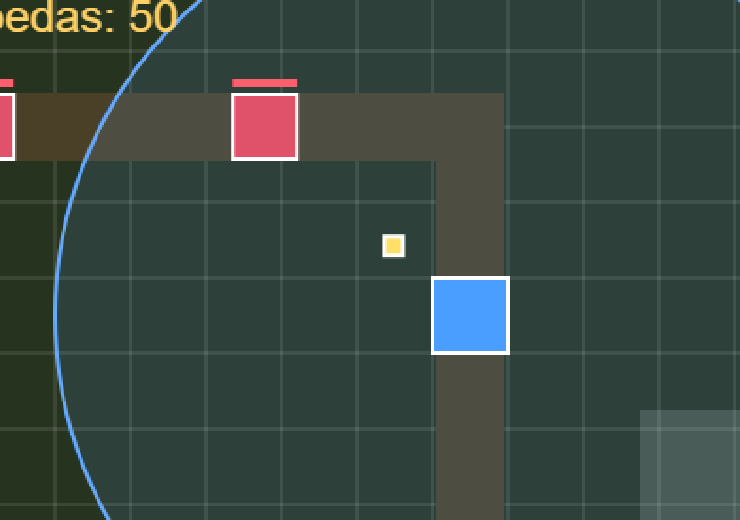
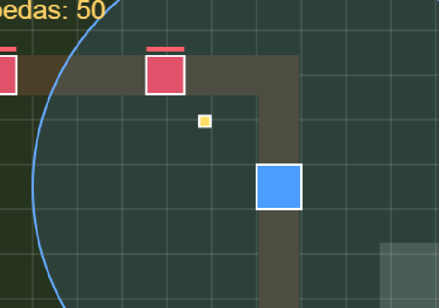
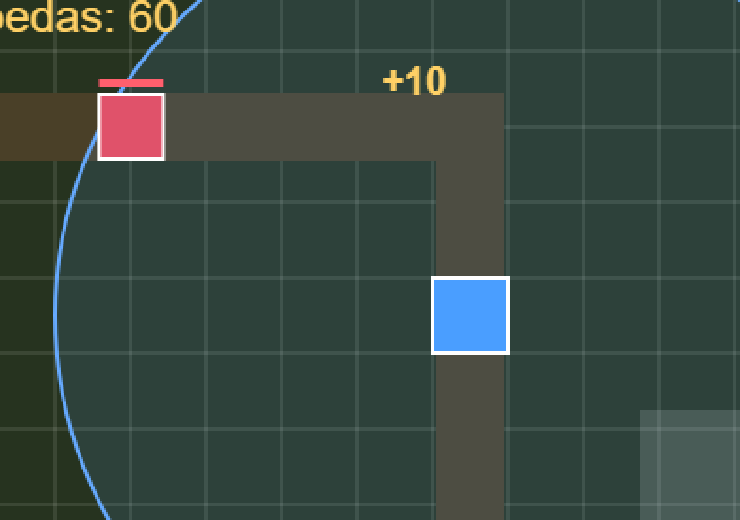
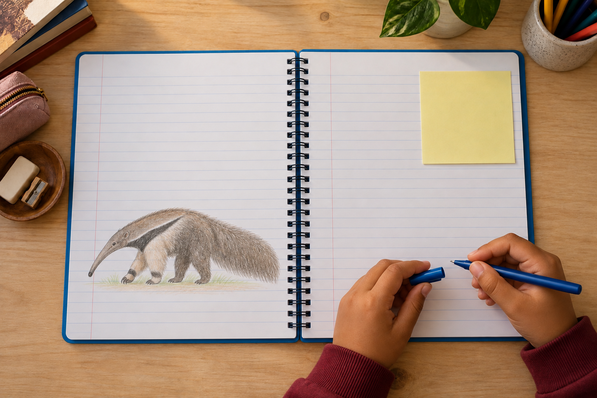

Teste em casa
“Faça uma apresentação sobre um animal.”
Esse pedido tem várias tarefas dentro dele.
ATIVIDADE DA ESCOLAApresentação
sobre um animal
sobre um animal
“Faça uma apresentação sobre um animal.”
Esse pedido tem várias tarefas dentro dele.
Escolher o animal, pesquisar, separar as informações, montar os slides e ensaiar.
Sua filha pode precisar de ajuda para escolher a primeira dessas ações.
Ao criar jogos, ela também aprende a separar um projeto em partes.

Fazer andarColocar um obstáculoFazer o personagem andar é uma tarefa. Colocar um obstáculo é outra.
Para organizar a atividade, perguntem:
O que precisa ficar pronto?
O que ela já sabe?
O que precisa descobrir primeiro?
Escolham uma pergunta específica para pesquisar.

PesquisarSe o animal é o tamanduá, podem começar por onde ele vive. Depois, procurar o que come.
Neste jogo de defender um castelo, a torre precisa encontrar o invasor antes de atacar.

A recompensa vem depois que o invasor é derrotado.
Na construção, conferimos uma parte de cada vez: a torre encontrou o invasor? Conseguiu atacar? Somou a recompensa?



Assim fica claro o que ainda falta fazer.
Com as partes organizadas, sua filha sabe qual ação vem agora.

Siga @criecomhelenaejulio para ver como criar jogos permite praticar esse planejamento.